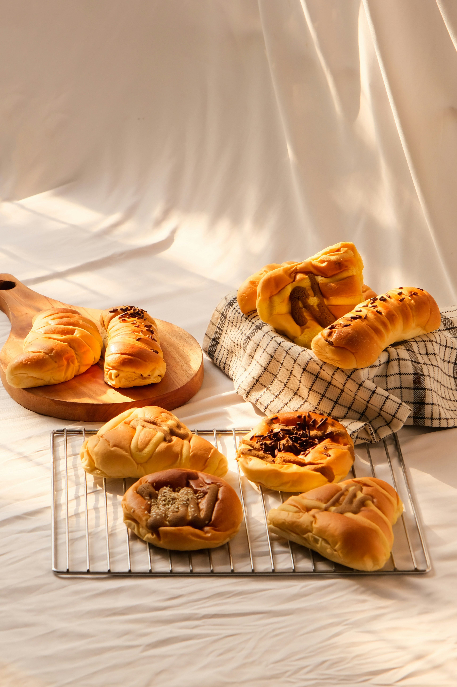
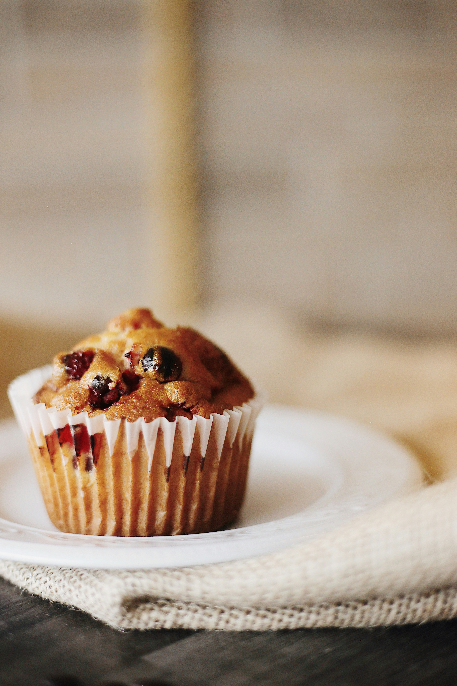

About Us
Brief History

T's Cakes and Pastries began in 2024 when the owner turned a love for baking into a small business.
It started with:
- Homemade cakes
- Muffins
- Scones
These pastries were made for:
- Friends
- Family
- Funerals
- Local events
As more people began recommending the cakes to others, it quickly grew through word-of-mouth. Today, T's Cakes and Pastries is known in the community for freshly baked goods, friendly service, and treats made with love and care.
Our Vision
To be the bakery that people in the community think of first when they want fresh, delicious treats made with love.
Our Mission
T's Cakes and Pastries is committed to bringing people together through fresh, high-quality baked goods. The business focuses on using good ingredients, friendly service, and making every customer feel special with every order.
"Baking isn't just about mixing ingredients; it's about making someone's day just a little bit sweeter."

Our Goals and Objectives
To ensure we serve our community properly, our core goals and objectives are:
- To help customers easily look at our products and connect with our friendly bakery staff.
- To showcase our freshly baked goods through beautiful, high-quality photos.
- To consistently promote current special offers to give back to the community.
- To provide clear contact details so customers can confidently make enquiries or place orders.
Who We Serve
T's Cakes and Pastries serve:
- Families
- Students
- Working professionals
- Anyone who enjoys freshly baked goods.
We also cater to customers looking for cakes and pastries for:
- Birthdays
- Celebrations
- Funerals
- Special events within the local community.
Our Team Members
Our team consists of passionate bakers who believe in the power of a good pastry. From our founder who started baking in her home kitchen, to our friendly customer service staff, we ensure every order is handled with care.
